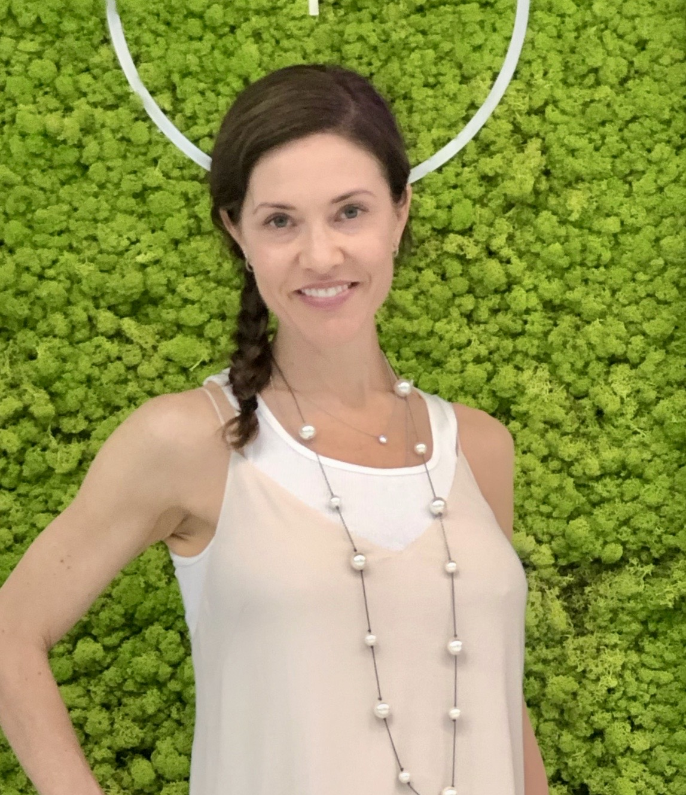

Anne Walsh Rabin

Summary
I am a people person. I love learning, being with people and creating.
Education
Integrative Nutrition certification - Institute of Integrative Nutrition (2019)
MBA - Nova Southeastern (2005)
Bachelors - Univesity of Louisiana (2000)
Work Experience
- Integrative Health Coach/Owner - Brain, Body, Strong LLC
June 2019 - present
- Assisted individuals to create a healthier lifestyle seamlessly.
- National Sales Support Manager
June 2009 - June 2017
- Led a team of highly qualified professionals that supported the National sales force.
Skills
- Sales ★ ★ ★★
- Management ★★★★
- Coaching ★★★★
Awards and Certifications
- Phi Beta Delta, Trust School, ACE Personal Training, Integrative Nutrition
Other
Contact Me
My Hobbies